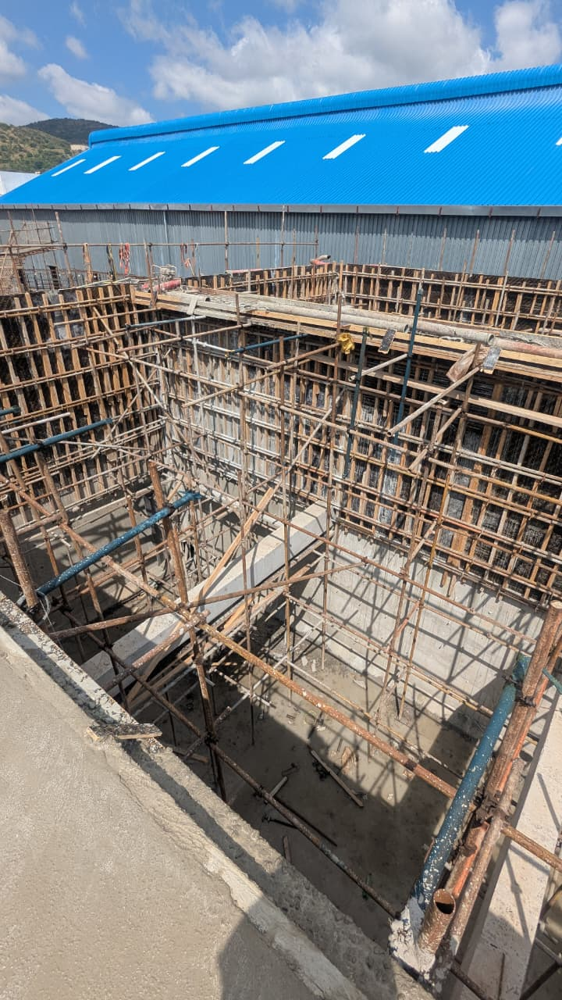
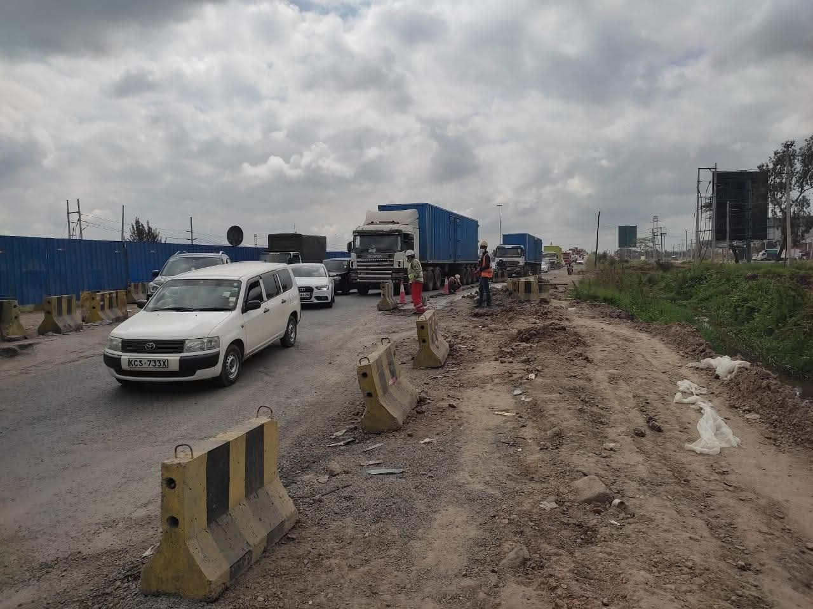
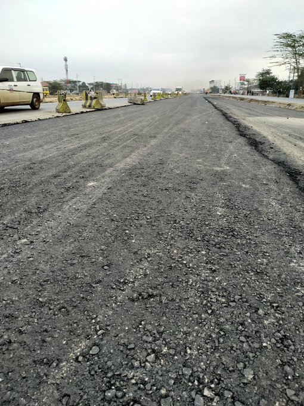

Hi, I am Lawrence Kiminja.
I am a Civil Engineer with over 5 years of local and international experience across multi-sector projects in Building construction, Energy, Roads and Water infrastructure. With progressive engineering experience, I have actively directed project lifecycles, starting my career in Contract Management roles, to Structural design & detailing and comprehensive project and site management roles for public and private sector projects. This has anchored my career in technical and leadership roles, helping to deliver complex projects on time and within budget.

Engineered for the Real World
From contract award to the last brick — I've been there
My mentor once told me, "A good Engineer will take any badly run and poorly resourced project and successfully deliver it on time and within budget."
Having worked in Construction in various project life cycles, I have tried to live by that inspiration. I have come to learn that a successful construction project is rarely the result of one thing done well. It's a hundred small decisions made correctly, under pressure, by people who know what they're doing.
Over five years across building multi-sector infrastructure, I've learned to be that person at every stage of delivery, successfully delivering both private and public projects to completion.
Engineering Projects Portfolio
Click directly on any image stack to smoothly sweep and reveal the next asset.


Residential Frameworks
Structural configuration, sizing calculations, and blueprint configurations matching custom zoning guidelines.


Infrastructure Appraisals
Condition modeling, safety load evaluations, and diagnostic layouts analyzing public utility structures.


Nyoro Engineering Scope
Civil execution tracking, ground progress surveys, and targeted design coordination workflows.